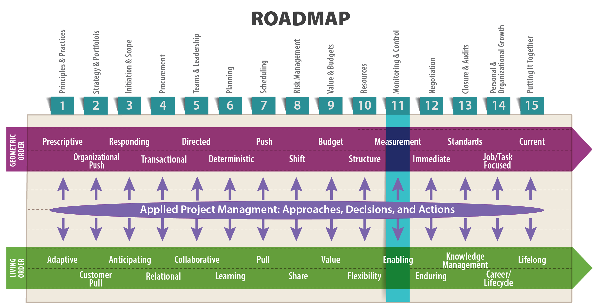
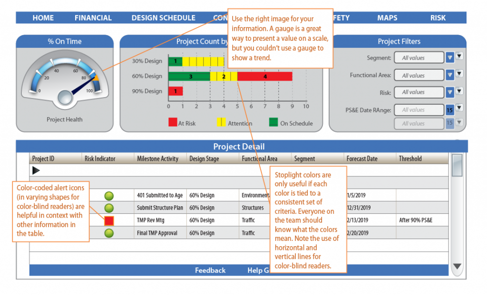
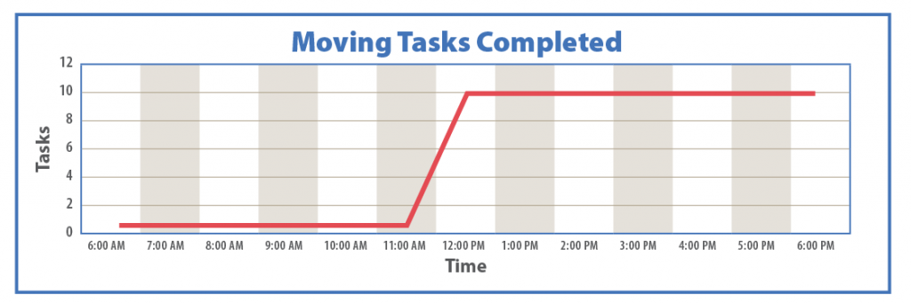
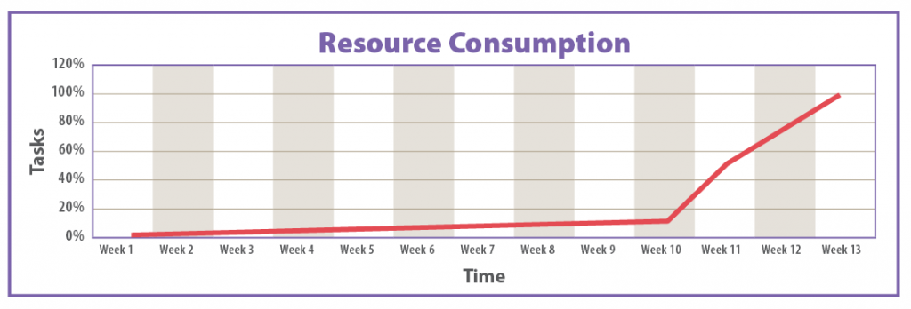

Information is a source of learning. But unless it is organized, processed, and available to the right people in a format for decision making, it is a burden not a benefit.
—William Pollard

Learning Objectives
After reading this lesson, you will be able to
The Big Ideas in this Lesson
The best project managers succeed through an artful combination of leadership and teamwork, focusing on people, and using their emotional intelligence to keep everyone on task and moving forward. But successful project managers also know how to gather data on the health of their projects, analyze that data, and then, based on that analysis, make adjustments to keep their projects on track. In other words, they practice project monitoring, analytics, and control.
Note that most project management publications emphasize the term monitoring and control to refer to this important phase of project management, with no mention of the analysis that allows a project manager to use monitoring data to make decisions. But of course, there’s no point in collecting data on a project unless you plan to analyze it for trends that tell you about the current state of the project. For simple, brief projects, that analysis can be a simple matter—you’re clearly on schedule, you’re clearly under budget—but for complex projects you’ll need to take advantage of finely calibrated data analytics tools. In this lesson, we’ll focus on tasks related to monitoring and control, and also investigate the kind of thinking required to properly analyze and act on monitoring data.
Generally speaking, project monitoring and control involves reconciling “projected performance stated in your planning documentation with your team’s actual performance” and making changes where necessary to get your project back on track (Peterman 2016). It occurs simultaneously with project execution, because the whole point of monitoring and controlling is making changes as team members perform their tasks. The monitoring part of the equation consists of collecting progress data and sharing it with the people who need to see it in a way that allows them to understand and respond to it. The controlling part consists of making changes in response to that data to avoid missing major milestones. If done right, monitoring and controlling enables project managers to translate information gleaned by monitoring into the action required to control the project’s outcome. A good monitoring and control system is like a neural network that sends signals from the senses to the brain about what’s going on in the world. The same neural network allows the brain to send signals to the muscles, allowing the body to respond to changing conditions.
Because monitoring and controlling is inextricably tied to accountability, government web sites are a good source of suggestions for best practices. According to the state of California, monitoring and controlling involves overseeing
all the tasks and metrics necessary to ensure that the approved and authorized project is within scope, on time, and on budget so that the project proceeds with minimal risk. This process involves comparing actual performance with planned performance and taking corrective action to yield the desired outcome when significant differences exist. The monitoring and controlling process is continuously performed throughout the life of the project. (California Office of Systems Integration n.d.)
In other words, monitoring is about collecting data. Controlling is about analyzing that data and making decisions about corrective action. Taken as a whole, monitoring and controlling is about gathering intelligence and using it in an effective manner to make changes as necessary. Precise data are worthless unless they are analyzed intelligently and used to improve project execution. At the same time, project execution uninformed by the latest data on changing currents in the project can lead to disaster.
The geometric order approach to monitoring and controlling focuses on gathering data about the past, and then using that information to estimate the future. This approach can be very helpful in some situations, but it is most effective when combined with a living order monitoring and controlling system, which does the following:
A living order monitoring and controlling system provides team members with the information they need to make changes in time to affect the project’s outcome. Such a system is forward-facing, looking toward the future, always scanning for potential hazards, making it an essential component of any risk management strategy. While it is essential to hold team members accountable for their performance, a monitoring and controlling system should focus on the past only in so far as understanding the past makes it possible to forecast the future and adjust course as necessary. Ideally, it should allow for rapid processing of information, which can in turn enable quick adjustments to the project plan. In other words, the best monitoring and controlling system encourages active control.
Active control takes a two-pronged approach:
The first step in active control is ensuring that the monitoring information is distributed in the proper form and to the right people so that they can respond as necessary. In this way, you need to function as the project’s nervous system, sending the right signals to the project’s muscles (activity managers, senior managers, clients, and other stakeholders), so they can take action. These actions can take the form of minor adjustments to day-to-day tasks, or of major adjustments, such as changes to project resources, budget, schedule, or scope.
Gary Whited, an engineer with 35 years of experience providing technical oversight of engineering projects for the Wisconsin Department of Transportation, and currently the program manager at the University of Wisconsin-Madison’s Construction and Materials Support Center, has thought a lot about project management throughout his career. The following, which is adapted from a lecture of his in 2014, summarizes his ideas on the four main steps involved in monitoring and control:
These four steps look deceptively simple. But they add real complexity to any project. This is especially true of the last three steps, which involve things like change management and document control. Everyone takes measurements at the end of a project, but that’s not all that helpful, except to serve as lessons learned for future projects. By contrast, a well-implemented monitoring and control process gives stakeholders the power to make essential changes as a project unfolds (Whited 2014).
When setting up monitoring and controlling systems for a new project, it’s essential to keep in mind that not all projects are the same. What works for one project might not work for another, even if both projects seem similar. Also, the amount of monitoring and controlling required might vary with your personal experience. If you’ve never worked on a particular type of project before, the work involved in setting up a reliable monitoring and controlling system will typically be much greater than the up-front work required for a project that you’ve done many times before. For projects you repeat regularly, you’ll typically have standard processes in place that will make it easy for you to keep an eye on the project’s overall performance.
Sometimes upper management owns the schedule of the project and requires ongoing assessment and monitoring in the form of project reviews, which typically have members of a board “sitting at a horseshoe-shaped table” while “a team member stands in front of them and launches a presentation.” The problem with such reviews is two-fold: 1) they can be somewhat severe and punitive, and 2) they can tear team members away from working on the project itself.
In their book Becoming a Project Leader, Laufer et al. describe a learning-based project review, which makes reviews about troubleshooting problems rather than assessing performance. Laufer et al. describe the experience of Marty Davis, a project manager at NASA’s Goddard Space Flight Center, who “developed a review process that provided feedback from independent, supportive experts and encouraged joint problem solving”:
The first thing Marty Davis did was to unilaterally specify the composition of the review panel to fit the unique needs of his project, making sure that the panel members agreed with his concept of an effective review process. The second thing he did was change the structure of the sessions, devoting the first day to his team’s presentations and the second day to one-on-one, in-depth discussions between the panel and the team members to come up with possible solutions to the problems identified on the first day. This modified process enabled Marty Davis to create a working climate based on trust and respect, in which his team members could safely share their doubts and concerns. The independent experts identified areas of concern, many of which, after one-on-one meetings with the specialized project staff and the review team’s technical specialists, were resolved. The issues that remained open were assigned a Request for Action (RFA). Eventually, Marty Davis was left with just five RFAs.
This kind of approach to project reviews ensured a supportive, failure-tolerant environment, and with its emphasis on continuous learning, had long-term benefits for each team member.
Exactly which items you need to monitor will vary from project to project, and from one industry to another. But in any industry, you usually only need to monitor a handful of metrics. There’s no need to over-complicate things. For example, when managing major construction projects for the Wisconsin Department of Transportation, Gary Whited, focused on these major items:
He also recommends monitoring the following:
In other kinds of projects, you will probably need to monitor different issues. But it’s always a good idea to focus on information that can serve as early warnings, allowing you to change course if necessary. This typically includes the following:
As Whited explains, the bottom line is this: “If it’s important to the success of your project, you should be monitoring it” (2014).
Note that measuring the percent complete on individual tasks is useful in some industries, where tasks play out over a long period of time. But according to Dave Pagenkopf, in the IT world the percent complete of individual tasks is meaningless: “The task is either complete or not complete. At the project level, percent complete may mean something. You really do need to know which tasks/features are 100% complete. But sloppy progress reports can generate confusion on this point. 100% of the functions in a software product 80% complete is not the same as having 80% of the features 100% complete. A poorly designed progress report can make these can look the same, when they most definitely are not” (pers. comm., November 13, 2017).
In addition to deciding what to monitor, you need to decide how often to take a particular measurement. As a general rule, you should measure as often as you need to make meaningful course corrections. For some items, you’ll need to monitor continuously; for others, a regular check-in is appropriate. Most projects include major milestones or phases that serve as a prime opportunity for monitoring important indicators. As Gary Whited notes, “The most important thing is to monitor your project while there is still time to react. That’s the reason for taking measurements in the first place” (2014).
As Chad Wellmon explains in his interesting essay, “Why Google Isn’t Making Us Stupid…or Smart,” the history of human civilization is the history of people trying to make sense of too much information (2012). As far back as biblical times, the writer of Ecclesiastes complained, “Of making books there is no end” (12:12). In the modern business world, we could update that famous quotation to read, “Of writing reports and sending emails there is no end.” Indeed, according to an article by Paul Hemp in the Harvard Business Review , many researchers argue that information overload is one of the chief problems facing today’s organizations, resulting in stressed out, demoralized workers who lose the ability to focus efficiently and think clearly because their attention is constantly being redirected; lost productivity and reduced creativity due to constant interruptions; and delayed decision-making caused by people sharing information and then waiting for a reply before they can decide how to proceed. According to Hemp, one study that focused on unnecessary email at Intel set the cost of “information interruptions” at “nearly $1 billion” (Hemp 2009).
So if you feel like you are drowning in a sea of information, you’re not alone. But as a project manager, you have the ability to shape all that data into something useful, whether by creating electronic, at-a-glance dashboards that collate vital statistics about a project, or by creating reports that contain only the information your audience needs. By doing so, according to Wellmon, you’ll be engaging in one of humanity’s great achievements—using technology to filter vast amounts of information, leaving only what we really need to know. As Wellmon puts it: “Knowledge is hard won; it is crafted, created, and organized by humans and their technologies.”
When reporting on the health of their projects, successful project managers tailor the amount of detail, the perspective, and the format of information to the specific stakeholders who will be consuming it. Talking to your company’s CEO about your project is one thing. Talking to a group of suppliers and vendors is another. You need to assesss the needs of your audience and provide only the information that is useful or appropriate to them. For example, in a report to upper management on a software development project, you might include data reporting costs to date, projected cost at completion, schedule status, and any unresolved problems. The report is unlikely to include details regarding programming issues unless a supervising manager has the technical ability and interest to be involved in such details. Dashboards for the coding team, however, would need to highlight progress on key unresolved coding issues and planned follow-up actions.
Brian Price, the former chief power train engineer for Harley-Davidson, and an adjunct professor in the UW Master of Engineering in Engine Systems program, says it’s helpful to think in terms of providing layers of information to stakeholders. At the very top layer is the customer, who typically only needs to see data on basic issues, such as cost and schedule. The next layer down targets senior management, who mostly need to see dashboards with key indicators for all the projects in a portfolio. Meanwhile, at the lowest layer, the core project team needs the most detailed information in the form of progress reports on individual tasks. This approach keeps people from being overwhelmed with information they don’t really need. At the same time, it does not preclude any stakeholder from seeing the most detailed information, especially if it’s available through a virtual project portal (pers. comm., August 17, 2016).
The decisions you make about what monitoring and controlling information to share with a particular audience are similar to the decisions you make about sharing schedules. In both cases, you need to keep in mind that your stakeholders’ attention is valuable. To put it in Lean terminology, attention is a wasteable resource (Huber and Reiser 2003). You don’t want to waste it by forcing stakeholders to wade through unnecessary data. Remember that the goal of monitoring and controlling information is to prompt stakeholders to respond to potential problems. In other words, you want to make it easy for stakeholders to translate the information you provide into action.
A well-designed dashboard can be extremely useful, greatly minimizing the time required to put reports together. If the data is live—that is, updated continually—stakeholders can get updates instantaneously, instead of waiting for monthly project review meetings. Even a dashboard that is merely updated daily, or even weekly, can prevent the waste and delays that arise when people are working with outdated information.
In his book Project Management Metrics, KPIs, and Dashboards: A Guide to Measuring and Monitoring Project Performance, Harold Kerzner discusses the importance of presenting monitoring information in a way that allows stakeholders to make timely decisions:
The ultimate purpose of metrics and dashboards is not to provide more information but to provide the right information to the right person at the right time, using the correct media and in a cost-effective manner…. Today, everyone seems concerned about information overload. Unfortunately, the real issue is non-information overload. In other words, there are too many useless reports that cannot easily be read and that provide readers with too much information, much of which may have no relevance. It simply distracts us from the real issues…. Insufficient or ineffective metrics prevent us from understanding what decisions really need to be made. (2013, vii)
A well-designed dashboard is an excellent tool for presenting just the right amount of information about project performance. The key to effective dashboards is identifying which dashboard elements are most helpful to your particular audience. Start by thinking about what those people need to focus on. For a given project, the same dashboard might not work for all groups. The dashboard you use to report to high-level managers might not be useful for people actually working on the project. Generally speaking, a dashboard should include only the information the intended audience needs to keep the project on track. A dashboard also helps senior managers evaluate different projects in their portfolio. They can quickly assess what’s working, what’s not working, and where they might provide assistance.
In a two-part series for BrightPoint Consulting, a firm that specializes in data visualization, Tom Gonzalez explains how to create effective dashboards by focusing on key performance indicators (KPI), which are metrics associated with specific targets (Gonzalez). You can download his series on dashboards here: http://www.brightpointinc.com/data-visualization-articles/. To learn more about KPIs, see this extremely helpful white paper, also by Tom Gonzalez: http://www.brightpointinc.com/download/key-performace-indicators/.
Figure 11-1 provides an example of an effective dashboard. It is simple, and easy to read, and focuses on a few KPIs.

For a dashboard to be really useful, it’s essential that all stakeholders share the same definitions of common metrics such as “high,” “medium,” and “low.” Likewise, everyone has to understand the specific meaning of the colors used in any color coded system.
To learn more about designing effective dashboards, see Chapter 6 of Kerzner’s book. For some tips on best practices for dashboards, take a look at this web site: https://www.targetdashboard.com/site/kpi-dashboard-best-practice/default.aspx#KPI-Dashboard-Design.
Of course a dashboard is only one part of a monitoring system. It allows you to see what’s going on in the present. As a project manager, you have to balance looking at the dashboard with looking through the front window to see where the project is headed, while occasionally checking your rearview mirror to see if you might have missed something important.
According to Dave Pagenkopf, Applications Development and Integration Director for DoIT at the UW-Madison, one effective form of monitoring in IT projects is asking team members to demonstrate their work:
For software projects where I am the sponsor or a key decision maker, I ask for product demonstrations before going through status reports. Demonstration of working software or the lack thereof tells me more about progress than any status report could. I have been known to take a quick tour of a data center when a team says they have finished installing servers. I have a large monitor in my office, so people can show me working software during meetings. As a general rule, in IT, the best performers always want to show what they have done. The poor performers want to talk about what they have done.
Another form of monitoring IT projects is simply taking a close look at the programmers. During marathon projects, when everyone is working nonstop, I look for signs of unspoken exhaustion that will inevitably lead to problems. Those usually show up first as changes in grooming habits, which I notice as I walk through the office. (pers. comm. November 22, 2017)
That last suggestion is an example of managing by walking around (MBWA)—a management style that emphasizes unplanned encounters with team members, and spontaneous, informal reviews of equipment and ongoing work. Sometimes a two-minute conversation with a team member will tell you more about the health of a project than piles of status reports. MBWA was first popularized in the 1980’s by Tom Peters and Robert H. Waterman in their book In Search of Excellence. You can read more about MBWA here: https://www.cleverism.com/management-by-walking-around-mbwa/.
At some point in your career, you’ll find your intuition telling you one thing, while the monitoring data you have so laboriously collected tells you something else. For example, a recently updated schedule and a newly calculated budget-to-completion total might tell you a project is humming along as expected and that everything will finish on time and under budget. But still, you get a feeling that something is amiss. Maybe a customer’s tone of voice suggests unhappiness with the scope of the project. Or perhaps a product designer’s third sick day in a week makes you think she’s about to take a job with a different company, leaving you high and dry. Or maybe the sight of unopened light fixtures stacked in a corner at a building site makes you wonder if the electricians really are working as fast as status reports indicate.
At times like these, you might be tempted to take action based solely on gut instinct. But as discussed in Lesson 2, that kind of unexamined decision-making leaves you vulnerable to the errors in thinking known as cognitive biases. For instance, suppose you’ve been working with Vendor A for several months, always with good results. Then, at a conference, you hear about Vendor B, a company many of your colleagues seem to like. You might think you’re following a simple gut instinct when you suddenly decide to switch from a Vendor A to Vendor B, when in fact your decision is driven by the groupthink cognitive bias, which causes people to adopt a belief because a significant number of other people already hold that belief.
In an article for the Harvard Business Review, Eric Bonabeau discusses the dangers of relying on pure intuition, or gut instincts:
Intuition has its place in decision making—you should not ignore your instincts any more than you should ignore your conscience—but anyone who thinks that intuition is a substitute for reason is indulging in a risky delusion. Detached from rigorous analysis, intuition is a fickle and undependable guide—it is as likely to lead to disaster as to success. And while some have argued that intuition becomes more valuable in highly complex and changeable environments, the opposite is actually true. The more options you have to evaluate, the more data you have to weigh, and the more unprecedented the challenges you face, the less you should rely on instinct and the more on reason and analysis. (Bonabeau 2003)
As Bonabeau suggests, you don’t want to detach intuition from analysis. Instead, you want your intuition to spur you on to seek more and better information, so you can find out what’s really going on. You can then make a decision based on informed intuition—a combination of information and instinctive understanding. You develop it through experience and by constantly learning about your individual projects, your teammates, your organization, and your industry. It can allow you to spot trouble before less experienced and less informed colleagues.
According to cognitive psychologist Gary Klein, this kind of instinctive understanding is really a matter of using past experience to determine if a particular situation is similar to or different from past situations. This analysis occurs so fast it seems to exist outside of rational thought, but is in fact supremely rational. By studying firefighters in do-or-die situations, Klein developed a new understanding of this form of thought:
Over time, as firefighters accumulate a storehouse of experiences, they subconsciously categorize fires according to how they should react to them. They create one mental catalog for fires that call for a search and rescue and another one for fires that require an interior attack. Then they race through their memories in a hyperdrive search to find a prototypical fire that resembles the fire that they are confronting. As soon as they recognize the right match, they swing into action. Thought of this way, intuition is really a matter of learning how to see—of looking for cues or patterns that ultimately show you what to do. (Breen 2000)
Klein doesn’t use the term informed intuition, but that’s what he’s talking about. Informed intuition is a matter of learning how to see, so you can analyze a situation in an instant and take the necessary action. That’s definitely something to aspire to as you proceed through your project management career.
The best monitoring data in the world is useless if you lack the ability to interpret it correctly. One of the most common interpretation errors is assuming the relationship between two things is linear when it is in fact nonlinear. Numerous studies in cognitive psychology have shown that humans have a hard time grasping nonlinear systems, where the relationship between cause and effect is uncertain. A cognitive bias in favor of linearity makes us naturally predisposed to perceive simple, direct relationships between things, when in reality more complex forces are at play.
For example, marketing forecasts often assume a linear relationship between consumer attitudes and behavior, when in fact things are much more complicated. One study focused on the relationship between consumers’ stated preference for organic products and the same consumers’ actual behavior. You might think that someone with a strong preference for organic products would buy more organic vegetables than someone with a less strong preference for organic products. You might be surprised to learn that this is not the case, because the relationship between consumer attitudes and behavior is nonlinear (van Doorn, Verhoef and Bijmolt 2007).
Project managers fall prey to the linearity bias frequently, especially when it comes to the relationship between time and the many elements of a project. Because time is shown on the x-axis in Microsoft Project, we make the mistake of thinking that individual tasks will be completed in one linear stream of accomplishment. In reality, however, the relationship graph may take the form of a curve or a step function. Failure to grasp this means that any attempts to monitor and control a project are founded on incorrect assumptions, and therefore doomed to failure.
In addition to muddying your understanding of cause and effect, the linearity bias can cause you to confuse activity with accomplishment. But just because people are bustling around the office does not mean they are actually getting anything done. Think of the kind of unfocused activity that often occurs as you’re getting ready to move from one home to the next. You might spend some time sorting kitchen utensils until you get distracted by alphabetizing your CD collection before you pack it away in boxes. Then, suddenly, the movers show up, and you kick into gear. In one hour, you might accomplish more than in the previous three days. A graph of your accomplishments during the move might look like the step function shown in Figure 11-2, with very little of importance actually being accomplished, followed by a great deal being accomplished.

As a project manager, you need to make your monitoring measures factor in the nonlinearity of resource use. Resource expenditures are often low at first. As a result, an inexperienced project manager might be lulled into thinking she is working with a linear system, in which resource expenditures will continue at the same rate throughout the project. In most projects, however, most of the resources are used up near the end of the project. Suddenly, the slope of the graph illustrating resource use over time takes a vertical turn, as in Figure 11-3.

Note that the step function model of productivity applies to most Agile projects. Productivity is zero until the team can demonstrate that they have created a working feature, at which point the productivity graph takes a step up. Ideally, each sprint causes another step up, but if the client is not satisfied with the outcome of a particular sprint, productivity stays flat until the end of the next sprint.
Here are a few practical tips related to monitoring and controlling:
Finally, here are additional helpful suggestions from Gary Whited (2014):
active control—A focused form of project control that involves the following: 1) controlling what you can by making sure you understand what’s important, taking meaningful measurements, and building an effective team focused on project success; and 2) adapting to what you can’t control through early detection and proactive intervention.
compliance program—A formalized program designed to ensure that an organization and its employees adhere to government regulations, follow all other laws, and behave ethically.
controlling—In the monitoring and controlling phase of project management, the process of making changes in response to data generated by monitoring tools and methods to avoid missing major milestones.
earned value management (EVM)—An effective method of measuring past project performance and predicting future performance by calculating variances between the planned value of a project at a particular point and the actual value.
informed intuition—A combination of information and instinctive understanding. You develop informed intuition through experience and by constantly learning about your individual projects, your teammates, your organization, and your industry.
key performance indicator (KPI)—A metric associated with a specific target (Gonzalez).
linearity bias—A cognitive bias that causes people to perceive direct, linear relationships between things that actually have more complex connections.
managing by walking around—A management style that emphasizes unplanned encounters with team members, and spontaneous, informal reviews of equipment and ongoing work.
monitoring—In the monitoring and controlling phase of project management, the process of collecting progress data and sharing it with the people who need to see it in a way that allows them to understand and respond to it.
monitoring and controlling—The process of reconciling “projected performance stated in your planning documentation with your team’s actual performance” and making changes where necessary to get your project back on track (Peterman 2016). Monitoring and controlling occurs simultaneously with execution.
Bonabeau, Eric. 2003. “Don’t Trust Your Gut.” Harvard Business Review, May. https://hbr.org/2003/05/dont-trust-your-gut.
Breen, Bill. 2000. “What’s Your Intuition?” Fast Company. August 31. https://www.fastcompany.com/40456/whats-your-intuition.
California Office of Systems Integration. n.d. “Best Practices: Monitoring & Control.” OSI Best Practices. Accessed June 1, 2018. http://www.bestpractices.ca.gov/project_management/monitoring.shtml.
Gonzalez, Tom. n.d. “Dashboard Design: Key Performance Indicators and Metrics.” BrightPointInc.com. Accessed June 1, 2018. http://www.brightpointinc.com/download/key-performace-indicators/.
Hemp, Paul. 2009. “Death by Information Overload.” Harvard Business Review, September. https://hbr.org/2009/09/death-by-information-overload.
Huber, Bob, and Paul Reiser. 2003. “The Marriage of CPM and Lean Construction.”
Kerzner, Harold. 2013. Project Management Metrics, KPIs, and Dashboards: A Guide to Measuring and Monitoring Project Performance, Second Edition. Hoboken: Wiley.
Laufer, Alexander, Terry Little, Jeffrey Russell, and Bruce Maas. 2018. Becoming a Project Leader: Blending Planning, Agility, Resilience, and Collaboration to Deliver Successful Projects. New York: Palgrave Macmillan.
Peterman, Rebekah. 2016. “Project management Phases: Exploring Phase #4 — Monitoring & Control.” PM. September 12. https://project-management.com/project-management-phases-exploring-phase-4-monitoring-control/.
van Doorn, Jenny, Peter C. Verhoef, and Tammo H.A. Bijmolt. 2007. “The importance of non-linear relationships between attitude and behaviour in policy research.” Journal of Consumer Policy 30 (2): 75-90. https://link.springer.com/article/10.1007/s10603-007-9028-3.
Wellmon, Chad. 2012. “Why Google Isn’t Making Us Stupid…or Smart.” The Hedgehog Review: Critical Reflections on Contemporary Culture 14 (1 (Spring 2012)). http://www.iasc-culture.org/THR/THR_article_2012_Spring_Wellmon.php.
Whited, Gary. 2014. Monitoring and Control. Recorded lecture with PowerPoint Presentation. Madison, September.